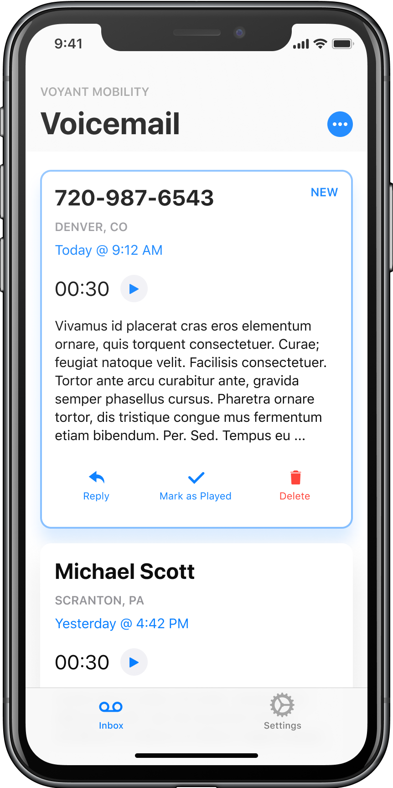
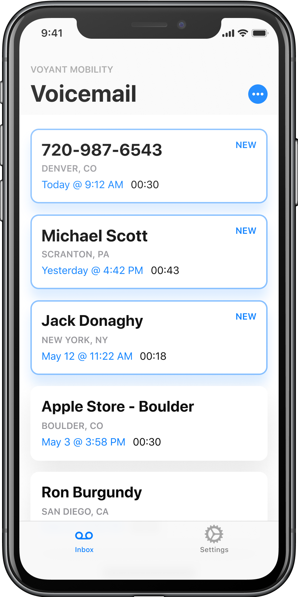

Business Context
A component of Voyant's Second Line eSIM product using Dual Sim Dual Standby (DSDS)
On newer iPhones such as the iPhone XR, a second phone line can be provisioned using eSIM technology. Built into the native phone app is the ability to handle both lines and visually differentiate them. However, the native phone app is not able to retrieve voicemails from both lines.
Research
Methodology
In an engineering-led legacy tech company with no research experience we needed to prove value quickly. Our methods were chosen for their cost effective, data driven format.
Quantitative
Network Logs
Surveys
Analysis
Insight: Most users receive few if any voicemails, except for a small group of power users
Insight: A significant proportion of voicemails are accidental
UX Solutions
Elastic Inbox

